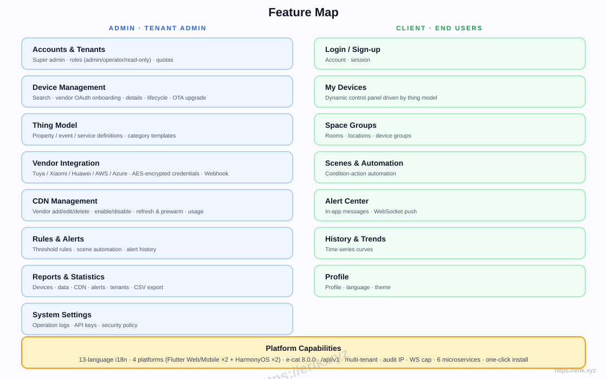
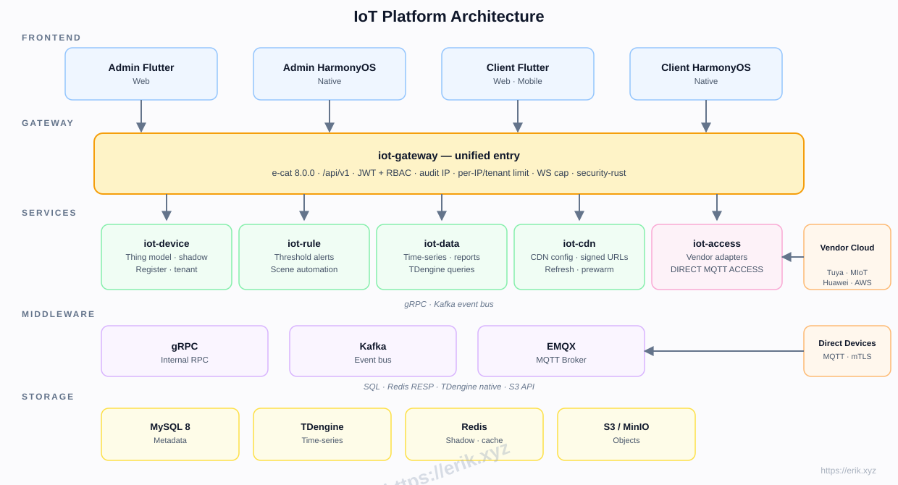

IoT Platform
IoT Platform
Cloud-to-cloud OAuth for Tuya, Xiaomi, Huawei, AWS, and Azure plus direct MQTT mTLS.
PROJECT FILE · 2026 · IOT PLATFORM
IoT Management Platform
Cloud-to-cloud vendor access plus direct MQTT device connectivity
This IoT management platform serves device vendors, solution providers, and multi-tenant SaaS…
01 / Introduction
AboutIoT Platform
WHO IT'S FOR
Device vendorsIoT solution providersMulti-tenant SaaS operatorsHardware developers
RustaxumtokiogRPCFlutterHarmonyOS ArkTSEMQXKafkaMySQL 8TDengine
This IoT management platform serves device vendors, solution providers, and multi-tenant SaaS operators. It connects Tuya, Xiaomi, Huawei, AWS IoT, Azure IoT, and other major ecosystems through one platform for device management, thing models, rules and alerts, time-series data, and multi-platform apps.
The backend is a Rust e-cat microservice workspace split into six services: gateway, device, access, data, rules, and CDN. EMQX handles MQTT and Kafka serves as the event bus; MySQL stores metadata and TDengine stores time-series data; Flutter Web/Mobile and four HarmonyOS apps share one API.
The typical flow: an administrator creates a tenant and device in the admin console, then chooses vendor OAuth cloud-to-cloud access or direct MQTT with mTLS. iot-access authenticates the device, iot-device maintains its lifecycle, and the thing model drives the client control panel. Telemetry flows through Kafka into iot-data and TDengine; when a rule threshold fires, alerts are pushed over WebSocket.
The platform is split into six Rust microservices by domain, so a growing device fleet does not couple every part of a monolithic IoT system. Metadata stays in MySQL, time-series data goes to TDengine, Redis only holds shadows and cache, and Kafka decouples ingestion from rule evaluation. Cloud-to-cloud adapters and direct MQTT coexist, letting devices from different vendors join through one thing model.
13Languages (i18n)
6Business services
MQTTDevice access
TDengineTime-series storage
mTLSMutual authentication
4Client platforms
02 / Editions
Same codebase, two editions
Both editions share one codebase, with the commercial edition built for production delivery: the open edition keeps device access, thing models, rules and alerts, TDengine, multi-tenancy, and RBAC; the commercial edition adds iot-cdn, S3/MinIO, three cloud vendors, and four HarmonyOS apps. Licensing: erik@erik.xyz.
OPEN SOURCE
Open Source
- MQTT/mTLS device access and lifecycle
- Thing models, rules, alerts, and scene automation
- TDengine time-series with CSV/Excel export
- Multi-tenancy, RBAC, and security-rust scanning
- Flutter admin/client apps with 13 languages
COMMERCIAL
Commercial
- Huawei/AWS/Azure cloud adapters
- iot-cdn: refresh/prewarm, signed URLs, reports
- Four HarmonyOS admin and client apps
- S3/MinIO object storage orchestration
- Full e-cat framework plus 18 extra crates
- i18n demo pages and CDN admin pages
| Dimension | Open Source | Commercial |
|---|---|---|
| Services | 5: gateway / device / access / rule / data-service | 6: adds iot-cdn |
| Vendors | Tuya, Xiaomi | Tuya, Xiaomi, Huawei, AWS IoT, Azure IoT |
| Clients | Flutter admin + Flutter client | Flutter + four native HarmonyOS apps (15 ArkTS files) |
| Data & search | 18 tables; TDengine time-series, Redis, Kafka/MQTT, local OTA files | 20 tables (+cdn_providers/cdn_tasks); S3/MinIO, CDN cache, optional data backends |
| e-cat framework | 45 crates | 63 crates (18 extra: 9 data backends, NATS/RabbitMQ, etcd, GraphQL, WebSocket, CDN, Edge, Bench) |
| Tests | 106 test files / 720 #[test]; ci.yml + release.yml | 133 test files / 914 #[test]; same CI/Release flow |
| Deployment | Docker Compose with 20 services, install.sh, 6 k8s manifests + HPA, 6 Prometheus jobs | 23 services (incl. iot-cdn/MinIO), same k8s/HPA, 7 Prometheus jobs |
| Licensing | Personal study/research only; written license required for commercial use; no SLA | Commercial license, delivery, and support; erik@erik.xyz |
03 / Features
Features built for real scenarios
Core capabilities of the current release; see the changelog for the full history.
Unified properties, events, and services drive dynamically rendered client panels.
Register, enable, disable, unbind, and delete with real-time online status.
Threshold rules and scene automation pushed in real time over WebSocket.
TDengine history curves, CSV/Excel export, and multi-dimensional reports.
Multi-vendor configuration, enable/disable, refresh/prewarm, and signed URLs.
Tenant isolation, quotas, and admin/operator/read-only roles.
JWT and RBAC, mutual TLS, AES-encrypted credentials, rate limiting, and circuit breaking.
← Swipe to explore →

04 / Front & Back Office
One system, two perspectives
The admin console runs operations and governance; the client delivers the user experience. Both share the same business and permission boundaries.
ADMIN
Admin Console
 Device management
Device managementRegistration, groups, online status, and lifecycle operations.
 Thing models
Thing modelsCategory properties, events, and service modeling.
 Vendor access
Vendor accessTuya, Xiaomi, Huawei, AWS, and Azure OAuth onboarding.
 Rules and alerts
Rules and alertsThreshold rules, scene automation, and alert records.
 Data reports
Data reportsHistory curves, multi-dimensional reports, and CSV/Excel export.
 CDN management
CDN managementVendor configuration, refresh, prewarm, and signed URLs.
 Tenant permissions
Tenant permissionsTenants, quotas, and admin/operator/read-only roles.
 API keys
API keysManage open API keys and access scopes.
CLIENT
Client
- Device control
Dynamic panels driven by thing models with command dispatch.
- Real-time status
Online state and property changes at a glance.
- Alert notifications
Rule-triggered notifications over WebSocket.
- History data
Device history curves and usage trends.
 Scene automation
Scene automationRun manual scenes and automated tasks.
 Multi-platform
Multi-platformFlutter Web/Mobile and HarmonyOS clients.
 Localization
LocalizationSwitch between 13 UI languages.
05 / Roadmap
From the current release to the next
Delivered, in-progress and planned milestones, based on the real development stages.
Skeleton
Repository structure, gateway, device service, and Docker orchestration.
DoneDevice access
iot-access, the Tuya adapter, and direct MQTT access.
DoneTime-series data
iot-data, TDengine history curves, and statistics.
DoneRules and alerts
iot-rule threshold alerts and scene automation.
DoneMulti-vendor and CDN
Xiaomi, Huawei, AWS, and Azure adapters plus iot-cdn.
DoneFrontends
Flutter and HarmonyOS admin and client apps.
DoneLaunch readiness
Security hardening, load testing, OTA, and production release.
In progress06 / Architecture
Structure determines how far it can go
Devices join iot-access through cloud-to-cloud OAuth or MQTT mTLS and bind to a thing model. Telemetry flows through Kafka into TDengine; iot-rule evaluates thresholds and pushes alerts over WebSocket. iot-gateway exposes the unified API, while MySQL, Redis, and MinIO provide metadata, cache, and object storage.
L01
Device AccessCloud OAuth · MQTT mTLS · EMQX
Multi-vendor cloud adapters and direct device authentication.
L02
Service GatewayRust axum · gRPC · JWT
Unified API, auth, rate limiting, and internal RPC.
L03
Business Servicesiot-device · iot-rule · iot-data
Five domains: device, access, rules, data, and CDN.
L04
Events and StorageKafka · MySQL · TDengine · Redis · MinIO
Event bus, metadata, time-series, shadow, and object storage.
L05
ClientsFlutter Web/Mobile · HarmonyOS ArkTS
Four admin and client apps with 13-language support.

Backend
RustaxumtokiogRPC
Data
MySQL 8TDengineRedisS3 / MinIO
Clients
Flutter WebFlutter MobileHarmonyOS ArkTS
Infrastructure
EMQXKafkaDocker Compose
MODULE MAP
07 / Security & Reliability
Security is not an afterthought
From boundaries and identity to data and failure, every layer is designed around zero trust.
Inbound scanning
security-rust scans inbound requests for attacks and malicious payloads.
Authentication
JWT and RBAC with admin, operator, and read-only roles.
Mutual TLS
MQTT mTLS validates device certificates and rejects unauthorized endpoints.
Credential encryption
Vendor credentials are AES-encrypted with minimal plaintext exposure.
Tenant isolation
Tenant-level data isolation and quotas prevent cross-tenant access.
Traffic protection
Gateway rate limiting and circuit breaking isolate abusive tenants and failing dependencies.
Zero trust · Least privilege · Auditable end to end
08 / Design Principles
Trade-offs before code
From business boundaries to code boundaries, these are the principles this project keeps returning to.
Domain split
Services are split by gateway, device, access, data, rules, and CDN so each scales independently as devices grow.
Hot and cold storage
Metadata in MySQL, time-series in TDengine, and Redis for shadows only, avoiding contention.
Unified thing model
Vendor differences stay in adapters; clients only see properties, events, and services.
Event decoupling
Kafka connects ingestion and rule evaluation, absorbing spikes and allowing independent replay.
09 / Project Pet
Smile
IoT Bot
A blue robot with a signal antenna and chest status light, evoking connected devices and a real-time IoT world.
10 / Installation
Get it running
A condensed path from the README to a minimal working environment.
Docker 24+docker composeRust 1.80+Ports 8080-8085 freePorts 3306/6379/1883/9092/6041 free
01
Get the code
Clone the repository and enter the project directory.
git clone https://github.com/erikwang2013/iot-platform.git && cd iot-platform02
One-click install
Start infrastructure, build six business services, and generate .env.
./scripts/install.sh03
Check infrastructure
Confirm MySQL, Redis, EMQX, Kafka, MinIO, and TDengine are ready.
docker compose ps04
Start services
Launch the six business services with the commands printed by the script.
05
Sign in to admin
Use the default administrator account from the README.
11 / Usage Guide
From first login to a full run
A minimal operating path covering admin setup, client usage and key APIs.
Log in with the default administrator account and open tenant-1.
Choose vendor OAuth or direct MQTT and enter device details.
Add properties, events, and services for the device category.
Set threshold rules and scene automation, then enable push.
Open history data for curves and CSV/Excel export.
Configure CDN vendors and run refresh, prewarm, and signed URLs.
12 / Support
If this project helped you
Scan WeChat or Alipay to support the project. Click a QR code to enlarge.


Thank you for your support. The project will keep being maintained and improved.
13 / Changelog
Every iteration leaves a trace
Latest v1.16.1; releases keep coming.
v1.16.1
Release v1.16.1
v1.16.0
Release v1.16.0
v1.15.0
Release v1.15.0
v1.14.0
Release v1.14.0
v1.13.0
Release v1.13.0
v1.12.0
Release v1.12.0
v1.11.0
Release v1.11.0
v1.10.0
Release v1.10.0